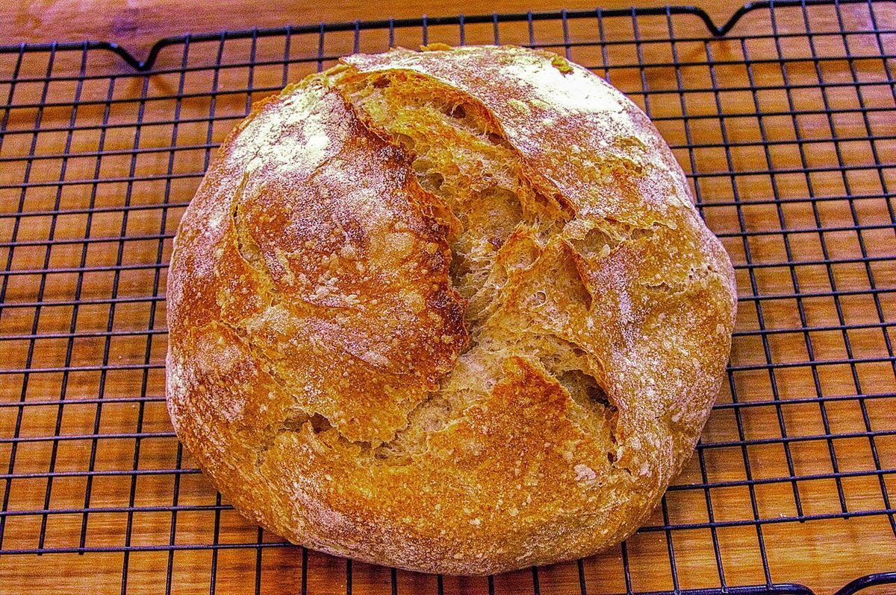

パン屋 / 愛媛県今治市

よしだや
愛媛県今治市のパン屋「よしだや」のご案内ページです。営業時間やメニューなど、詳しいことは準備中。まずはInstagramをのぞいてみてください。
制作側の連想
「よしだや」の「よし」から、指差し点検票へ
店名の由来は分かりません。制作側は「よしだや」の「よし」という響きから、鉄道や工場で見かける「指差し確認、ヨシ!」を連想しました。そこでこのサイトは、点検票のように「確認できたことだけにヨシを付ける」作りにしています。制作側の連想であり、お店の理念・由来・仕事の進め方とは無関係です。
点検票
確認できたこと、まだのこと
「ヨシ」は、所在地・電話番号・Instagramが確認できている項目だけに付けています。それ以外は準備中です。
指差し先(イメージ)
パンの写真を4枚、指差してみる
写真はお店のものではなく、国外または撮影地不明のフリー素材です。提供しているパンを示すものではありません。
- 1

撮影地不明のイメージ - 2

撮影地不明のイメージ - 3

撮影地不明のイメージ - 4

国外のイメージ(米国)
ご案内
お店のこと(確認できたものだけ)
| 所在地 | 〒794-0018 愛媛県今治市本町３丁目１−２８ |
|---|---|
| 電話 | 0898-22-1271 |
| 営業時間 | 準備中 |
| 定休日 | 準備中 |
| ご予約 | 準備中 |
| 駐車場 | 準備中 |
| SNS | Instagram @p.yoshidaya |